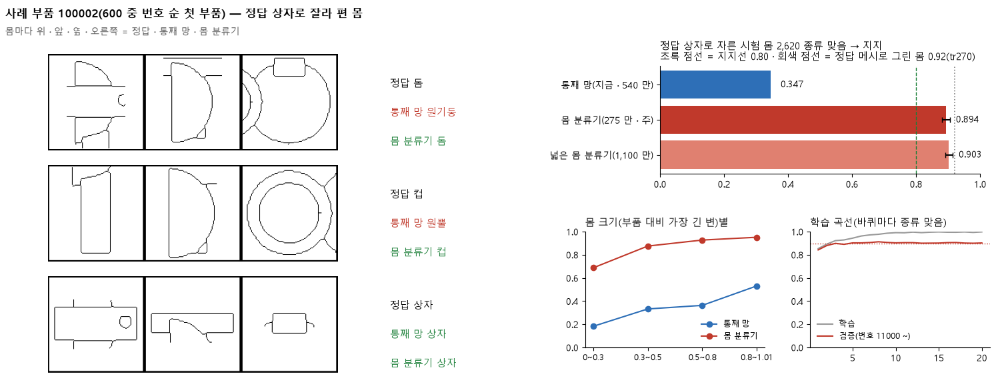

실험 m2_tr0282_h033_몸분류
목표 G1.2 view 모음 → 파츠별 CAD code(CadQuery · 그 전 「3 면도 → 파츠별 CAD」 · 지금 M2 는 위 · 앞 · 옆 고정 세 장만 받음 → 아무 각도 N 장으로 바꿀 것 · 11-20) · G1 첫 제품 — 피규어 · 메카 사진 여러 장 + 치수 → 숨은선 3 면도 + 파츠별 CAD · G0 임의의 이미지 → CAD 코드 · 빌린 가정 3: 생성기기하 · 정답3D · 정사영 · 갚는 계획: 진단 · 정답 상자(정답 나누기) · 생성기 부품 · 시험 = tr279 와 같은 600 — 높으면 망 상자(tr277 맞춘 · dd 의 망 없는 상자)로 바꿔 진척판 2,024 에 점(Fi) → 흐린 view · m1 view 로 버팀(Sc) · 목표 시험지 값: 안 잼 (!)
그림에서 정답 상자로 잘라 낸 몸 그림으로 몸 하나 분류기를 학습하면, 처음 보는 부품의 정답 상자로 잘라 낸 몸 종류를 맞히나?
판정 · H33 지지(0.894 [0.882, 0.906] · 지지선 0.80) — 그림에서 정답 상자로 잘라 낸 몸 그림으로 배운 몸 분류기는 처음 보는 부품 몸 종류를 0.89 로 맞힘(같은 몸 통째 망 0.35) · tr279 실패의 큰 몫은 잘린 그림을 본 적 없음 · 용량 아님(넓혀도 0.90) · 망 상자로 잘라도 자리짝종류 0.532 → 0.566(판정 아님) · 상자 맞는 몸은 0.94 · 10 화소 넘게 어긋난 몸은 0.22 · 다음: 망 상자로 잘라 몸 분류기로 종류를 바꾸는 고침(Fi · tr0284 · H35)을 진척판 2,024 로 · 상자가 믿을 만할 때만 바꾸는 갈래 · dd 의 선 주인 가리기로 상자 오차 줄이기
| 가설 | 주장 | 결과 | 근거 |
|---|---|---|---|
| H33 | 그림에서 잘라 낸 몸 그림에도 종류 정보가 남아 있어, 그 그림으로 배운 분류기는 처음 보는 부품의 몸 종류를 맞힌다 | 지지 | 같은 몸 통째 망 0.347 · 넓은 분류기(약 1,100 만 · 10 바퀴 · 배치 128 둘로 기울기 모음) 0.903 [0.892, 0.914] · 학습 20 바퀴 학습 맞음 0.997 · 검증 0.902(5 바퀴부터 0.90 안팎) · 몸 크기별 몸 분류기 0.687(0 ~ 0.3 · 99) · 0.875(0.3 ~ 0.5) · 0.927(0.5 ~ 0.8) · 0.951(0.8 ~ · 81) · 종류별 상자 0.959 · 원기둥 0.796 · 원뿔 0.916 · 돔 0.928 · 컵 0.875 · 계단축 0.834 · 그릇 0.930 · Fi 미리 보기(판정 아님 · 망 상자 tr277 맞춘): 자리짝종류 0.532 → 0.566 · 차 구간 [0.013, 0.054] · 판정 뒤 상자 오차별(dd tr281 · 짝지은 몸 2,472): 1.5 화소 안 791 망 0.834 → 분류기 0.942 · 1.5 ~ 3 252 0.607 → 0.790 · 3 ~ 10 641 0.371 → 0.426 · 10 넘음 788 0.341 → 0.220 |
분석
한 줄로
물음: 그림에서 정답 상자로 잘라 낸 몸 그림으로 「몸 하나 분류기」를 배우면, 처음 보는 부품의 잘라 낸 몸 종류를 맞히나?
답: 맞힌다 — 지지. 시험 몸 2,620 개에서 0.89 [0.88, 0.91] 를 맞혔다. 같은 몸을 지금 통째 망에 보이면 0.35 다. tr279 가 실패한 큰 까닭은 「잘린 그림을 본 적 없음」 이었다.
왜 이 실험을 했나
tr279 에서 통째 그림 망에 잘라 낸 몸을 보이니 오히려 나빠졌다(정답 상자로 잘라도 0.35). 정답 메시로 그린 몸은 0.92 였다. 갈래가 둘 남았다. 망이 잘린 그림을 본 적이 없어서인가, 아니면 그림에서 자른 선에는 종류 정보가 모자라서인가. 뒤쪽이면 「그림에서 나누기」 길 전체가 막힌다.
바꾼 것 하나
몸 종류를 읽는 망만 바꿨다. 학습 부품(번호 < 11000 · 몸 2 개 이상)의 몸 36,960 개를 tr279 와 같은 길로 잘라, 작은 분류기(약 275 만 개 숫자 · m2 와 같은 CNN 블록)를 20 바퀴 배웠다. 시험 부품 · 정답 상자 · 자르기는 tr279 와 같다. 카드는 돌리기 전에 커밋했다(62f9b834).
결과

| 시험 몸 2,620 | 몸 분류기 | 통째 망(대조) | 판정선 | 넘었나 |
|---|---|---|---|---|
| 몸 종류 맞음 | 0.89 [0.88, 0.91] | 0.35 | ≥ 0.80 · 아래 ≥ 0.75 | 예(지지) |
사용자 물음 「모델 용량이 너무 작지 않아?」 에 답하려고 4 배 넓힌 분류기(약 1,100 만)도 같이 돌렸다. 0.90 으로 +0.01 이다. 작은 분류기는 학습 몸을 0.997 까지 맞히는데 검증은 5 바퀴부터 0.90 에 멈췄다 — 용량이 모자라는 게 아니라 외우는 쪽이다.
왜 이렇게 나왔나
확인한 것
- 잘라 낸 그림에도 종류 정보가 있다. 배우면 0.89 로, 정답 메시로 그린 몸(0.92)과 3 점 차이다.
- 작은 몸일수록 어렵다. 가장 긴 변이 부품의 0.3 안이면 0.69, 0.8 넘으면 0.95.
- 판정 밖으로, 정답 상자 대신 망 상자(tr277 이 맞춘 것)로 잘라도 자리짝종류가 0.53 → 0.57(+0.034 [0.013, 0.054])로 올랐다. 나누기 쪽 시도가 바탕을 넘은 건 처음이다.
판정 뒤 — 상자 오차별 (dd 의 tr281 상자 오차 · 짝지은 몸 2,472)
| 망 상자 오차 | 몸 | 망 종류 맞음 | 몸 분류기 |
|---|---|---|---|
| 1.5 화소 안 | 791(32 %) | 0.83 | 0.94 |
| 1.5 ~ 3 | 252(10 %) | 0.61 | 0.79 |
| 3 ~ 10 | 641(26 %) | 0.37 | 0.43 |
| 10 넘음 | 788(32 %) | 0.34 | 0.22 |
상자가 맞으면 크게 낫고, 10 화소 넘게 어긋나면 더 나빠진다.
짐작 (아직 확인 안 함)
- 상자가 믿을 만한 몸에서만 분류기 종류로 바꾸면 +0.034 보다 더 오를 것이다.
한계
- 정답 상자는 정답 나누기다(천장). 상자가 몸 꼴(가로세로 비)을 알려 준다.
- 분류기 하나 · 씨 하나 · 600 부분집합. 학습 그림은 옛 생성기 그대로.
- 넓은 팔은 10 바퀴 · 배치 128 둘로 기울기를 모음(8 GB 에 안 들어가서 · GroupNorm 이라 같은 셈).
배운 것과 다음
그림에서 나누기 길은 살아 있다 — 잘린 몸 그림으로 배우면 0.89 · 막힘은 이제 상자다.
- 고침(Fi · tr0284 · H35): 망 상자로 잘라 몸 분류기로 종류를 바꾸는 것을 진척판 2,024 로 잰다. 상자가 믿을 만할 때만 바꾸는 갈래를 같이.
- 상자 오차 줄이기: dd 의 선 주인 가리기(tr0283)와 붙인다 — 10 화소 넘는 32 % 가 남은 몫.
실험 기록
- 카드(돌리기 전 커밋 62f9b834 · H33_A_Ce · 식 · 판정식 · 결과 전 넓은 팔 더함) · 몸분류282.py(상자 · 자르기 · 흐름 · 학습 · 재기 · 그림 · 자검사) · 잼.json · 흐름.png · 결과.png · 원본 out/설명/캐드부품/모델282(몸.npz 40,314 · 몸망.pt · 몸망_폭2.pt · 학습.json · 재기.npz · 상자오차별.json)
- 자 검사 몸종류맞음 통과(오라클 1.0 · 열화 0.789 · 0.608 · 무작위 0.145 · 가장 흔한 종류 0.224).
- 학습 부품 10,510 몸 상자 못 지음 0 · 넓은 팔은 처음 GPU 를 상자 맞추기와 나눠 쓰다 메모리 넘쳐(OOM) 둘로 나눠 다시 돌림.